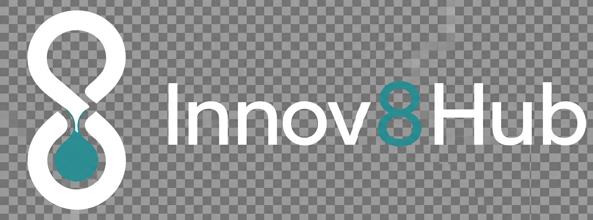

Start with the Job Tracker. Add automation modules as the business grows. Built around how you actually work — on the tools, in the van, at a job site.
Track enquiries, quotes, jobs, follow-ups and invoices in one place.
The Job Tracker is the foundation. Every client gets set up with a live dashboard, a schedule view and an invoice list — all connected so you can see the week clearly without spreadsheets, sticky notes or separate apps. Once this is running, automation modules can be added around it.
Book Free Automation PlanIncluded in the Admin Starter plan and above. See pricing →
Invoice follow-up, payment reminders and cash flow visibility — without relying on memory or late-night admin sessions.
Invoices go out by SMS. Payment reminders are sent automatically on a schedule. Overdue invoices are flagged before they become a problem. This module is typically added once the Job Tracker is running smoothly.
Book Free Automation PlanAvailable on the Cashflow Control plan and above. See pricing →
When a new enquiry comes in while you're at a job, automated systems can help reduce missed follow-ups and keep leads moving through your pipeline — without you stopping what you're doing.
This module also covers recurring customer management, review request automation and quote follow-up. Most businesses add this after the Job Tracker and cashflow automations are running smoothly.
Book Free Automation PlanAvailable on the Growth Engine plan and above. See pricing →
Optional performance-based growth model available for selected clients after discovery.
For businesses with specific workflow challenges, unusual integrations or a need to think through how to improve operations before building anything.
We map your current process, identify where time and money are being lost, and design a practical plan to address it. This might include connecting to Xero or MYOB, building custom workflows, or restructuring how the team handles bookings and admin.
For selected clients, Innov8Hub can go beyond automation setup and work as a growth partner. Where suitable, we may structure part of our engagement around agreed, trackable outcomes — such as qualified leads, booked jobs or attributed new revenue. This is scoped case-by-case and only offered where tracking, attribution, responsibilities and commercial terms are agreed upfront.
Available on the Automation Plus plan. See pricing →

Most businesses start with the Job Tracker and basic invoicing, then add automation modules once the foundation is working. Book a free call and we'll map out the right starting point for your business.